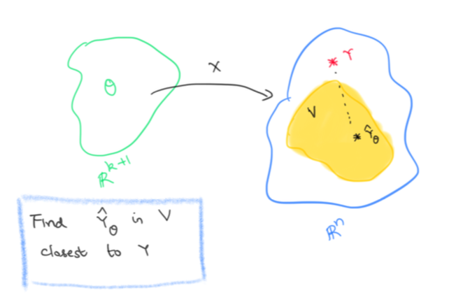
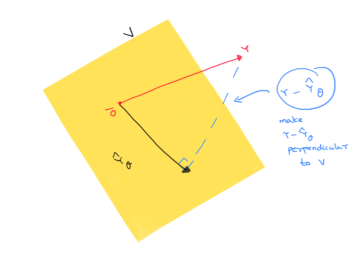

Linear regression and the normal equation
Prerequisites
Basic linear algebra, derivatives, orthogonal projections and a will to think abstractly!
What is linear regression ?
In an experiment, we observe the values of some features or attributes. We would like to predict the value of a target variable based on the observed features. Linear regression tries to guess a linear relationship between the features and the target.
To continue with our weather example from before, say we have access to the average daily temperature \(T\), the wind-gut \(W\) , and the total minutes of sunshine \(S\) per day. These will be our features. We would like to predict the amount of precipitation \(P\) each day. This will be our target variable.
We are trying to find a linear relationship between \(P, T, W, S\). That is, we’d like to find \(\theta_0, \theta_1, \theta_2, \theta_3\) so that
\[ P = \theta_0 + \theta_1 T + \theta_2 W + \theta_3 S \]
Linear regression abstracted out
Let’s say we have weather data over \(n\) days. For day \(i\), we collect that day’s feature values \(T, W, S\) into a row vector \(x_i = (x_i^1, x_i^2, x_i^3)\). That day’s precipitation value becomes the target value \(y_i\).
Abstracting out this set up, we can assume we are given data points \(x_1, x_2, \ldots x_n\) where each data point \(x_i\) has \(k\) features and has target \(y_i\). That is, each data point \(x_i\) looks like the row vector \(x_i = (x_i^1, x_i^2, \ldots, x_i^k)\) and the target variable in which we are interested in has value \(y_i\) for the data point \(x_i\).
Linear regression tries to find a linear relationship between the data points \(x_i\) and their targets \(y_i\). That is, we want to find real numbers \(\theta_0, \theta_1, \ldots , \theta_k\) so that for each \(i\), we have
\[ \theta_0 + \theta_1 x_i^1+ \theta_2 x_i^2 + \ldots + \theta_k x_i^k = y_i \]
Introducing dummies
The \(\theta_0\) stands out without a binding feature \(x_i^0\), so to make it uniform, we introduce a dummy feature \(x_i^0 = 1\) for each datapoint \(x_i\). That is, each data point \(x_i\) now looks like the row vector
\[ x_i = (x_i^0=1, x_i^1, x_i^2, \ldots, x_i^k) \]
So we want to find real numbers \(\theta_0, \theta_1, \ldots , \theta_k\) so that for each \(i\), we have
\[ \theta_0 x_i^0 + \theta_1 x_i^1+ \theta_2 x_i^2 + \ldots + \theta_k x_i^k = y_i \]
A matrix equation
Let’s bundle up \(\theta_0, \theta_1, \theta_2, \ldots, \theta_k\) into a column vector \(\theta\), \(y_1, y_2, \ldots, y_n\) into a column vector \(Y\) and the row vectors \(x_1, x_2, \ldots , x_n\) into a \(n\times (k+1)\) matrix \(X\)
\[ X = \left(\begin{array}{ccccc} x_1^0 & x_1^1 & x_1^2 & \ldots & x_1^k \\ x_2^0 & x_2^1 & x_2^2 & \ldots & x_2^k \\ . & . & . & \ldots & . \\ x_n^0 & x_n^1 & x_n^2 & \ldots & x_n^k \end{array}\right)\ ; \ \theta = \left(\begin{array}{c} \theta_0 \\ \theta_1 \\ . \\ . \\ \theta_k \end{array}\right) \ ; \ Y = \left(\begin{array}{c} y_1 \\ y_2 \\. \\ y_n \end{array}\right) \]
Then solving the \(n\) linear regression equations above simultaneously is the same as solving the matrix equation \(X\theta = Y\)
An approximate solution using least-squares
Unfortunately, you might not always be able to solve this system of linear equations on the nose. Then we aim for an approximate solution which is the best among other approximate solutions in the following sense:
Let \(X\theta = \hat{Y}_{\theta}\). That is, our predicted values for the target variable is 1 \(\hat{Y}_{\theta}\). We would like our predictions to be as close to the real truth as possible. So we want \(\hat{Y}_{\theta}\) to be as close to \(Y\) as possible. That is, we want the norm \(\|Y-\hat{Y}_{\theta}\|\) to be minimal.
Since this is the same as demanding minimality of \(\|Y-\hat{Y}_{\theta}\|^2\), we want to minimize the following sum of squares
\[ (y_1-\hat{y}_1)^2 + (y_2-\hat{y}_2)^2 + \ldots (y_n - \hat{y}_n^2) \]
That is, we want a least-squares solution of the matrix equation \(X\theta = Y\)
An analytic approach
If you are uncomfortable with multivariable derivatives, skip ahead to the geometric approach!
\[ \begin{align*} \|Y-\hat{Y}_{\theta}\|^2 & = (Y-\hat{Y}_{\theta})^T (Y-\hat{Y}_{\theta}) \\ & = (Y-X\theta)^T(Y-X\theta)\\ & = (\theta^TX^T-Y^T)(Y-X\theta) \\ & = \theta^TX^TY - Y^TY -\theta^TX^TX\theta + Y^TX\theta \\ & = \theta^TX^TY - Y^TY -\theta^TX^TX\theta + (\theta^TX^TY)^T\end{align*} \]
Since \(\theta^TX^TY\) is a2 \(1\times 1\) matrix, \(\theta^TX^TY = (\theta^TX^TY)^T\). Thus
\[ \|Y-\hat{Y}_{\theta}\|^2 = - Y^TY -\theta^TX^TX\theta + 2\theta^TX^TY \].
Since \(Y^TY\) doesn’t depend on \(\theta\), we may as well minimize the following function
\[ f(\theta) = 2\theta^TX^TY -\theta^TX^TX\theta \]
Taking gradient with respect to \(\theta\), we get \(\nabla_{\theta}f = 2X^TY - 2X^TX\theta\). Remember we want the gradient to be 0 since we are trying to find extrema of \(f(\theta)\). So we want \(2X^TY - 2X^TX\theta = 0\).
That is, we want \(\theta\) so that \(X^TX\theta = X^TY\).
Normal equation
The matrix equation \(X^TX\theta=X^TY\) is called the normal equation of \(X\theta=Y\). And from our discussion above, it should be more or less clear that a solution \(\theta\) of the normal equation gives a least-squares solution of \(X\theta=Y\).
This is good, but how do we know a solution of the normal equation actually exists ? Also how do we check that the extrema we get are actually minima ? These can of course be shown with some further computation. Instead, we present a geometric approach which avoids derivatives altogether and uses some geometric insight to derive the normal equation and show the existence of a least-squares solution!
A geometric approach
Let’s go back to the equation \(X\theta = Y\). Since we can’t always solve this equation on the nose, we are content with an approximate solution \(\theta\) so that \(X\theta \simeq Y\). If we define \(\hat{Y}_\theta = X\theta\), then out of all possible approximate solutions \(\theta\), we want to pick the one so that \(\| Y-\hat{Y}_{\theta}\|\) is minimum.
Let’s consider the space of ALL possible values for \(\theta\). This is just \(\mathbb{R}^{k+1}\), i.e \(\theta\) can be any \(k+1\) column vector. Let’s now look at the set \(V\) which consists of all possible predictions \(\hat{Y}_{\theta}\). That is,
\[ V = \{ X\theta \mid \theta \in \mathbb{R}^{k+1}\} \]
Let’s view \(X\) as a linear map \(X: \mathbb{R}^{k+1}\to \mathbb{R}^n\), that is \(X\) is a linear map from the space of possible \(\theta\)s to the space of all possible values of the target variable.
Then \(V\) is just the image of \(X\). In particular, it is a subspace of \(\mathbb{R}^n\). To reiterate, \(\mathbb{R}^n\) is the space of all possible values of the target variable, \(Y\) is the particular value of the target variable that we are trying to hit and \(V\) is the subspace of all our possible predictions.
Now if \(Y\) lies in \(V\), we can hit it on the nose, that is we can find a solution \(\theta\) that actually solves \(X\theta=Y\). If we can’t, we are trying to find the vector \(\hat{Y}_{\theta}\) in \(V\) which is closest3 to \(Y\).

Finding the vector in a subspace closest to a given target
\(V\) is a subspace of \(\mathbb{R}^n\) and \(Y\) is a given vector in \(\mathbb{R}^n\). We want to find \(\hat{Y}_{\theta}\in V\) which is closest to \(Y\). How do we do that ? Let’s visualize these vectors and also the vector \(Y-\hat{Y}_{\theta}\). Remember we are trying to make \(\|Y-\hat{Y}_{\theta}\|\) as small as possible

Since the shortest distance between a point and a subspace is the perpendicular from the point to the subspace, we aim to make \(Y-\hat{Y}_{\theta}\) to be perpendicular to \(V\) ! Note that this is the same thing as saying that the closest prediction \(\hat{Y}_{\theta}\) is simply the orthogonal projection of \(Y\) to \(V\).
Images and kernels and transposes
Now there is a really nice relation4 between images of a linear map \(X\) and the kernel of its transpose \(X^T\). Vectors perpendicular to \(\mathrm{Image}(X)\) are actually in the kernel of \(X^T\) and vice-versa. In symbols, this is written as
\[ \mathrm{Image}(X)^{\perp} = \mathrm{Kernel}(X^T) \]
Now we want \(Y-\hat{Y}_{\theta}\) to be perpendicular to \(V = Image(X)\). So we want \(Y-\hat{Y}_{\theta}\) to be in the kernel of \(X^T\). That is, we want
\[ \begin{align*} & \phantom{\implies} X^T(Y-\hat{Y}_{\theta}) = 0 \\ & \implies X^T(Y-X\theta) = 0 \\ &\implies X^TX\theta = X^TY \end{align*} \]
Voila! We want a solution \(\theta\) to the normal equation \(X^TX\theta = X^TY\)
Solutions of the normal equation
The geometric approach immediately tells you why a solution \(\theta\) exists for \(X^TX\theta = X^TY\). As we have already figured out, \(\theta\) is a solution precisely when \(X\theta = \hat{Y}_{\theta}\) is the orthogonal projection of \(Y\) onto \(V = \mathrm{Image}(X)\).
So backtracking, take \(Y\), project it to \(V = \mathrm{Image}(X)\). The projection will have to look like \(X\theta\) for some \(\theta\) because the projection is in the image subspace \(V\). That \(\theta\) is a solution of the normal equation and hence a least-squares solution to the equation \(X\theta=Y\) we are after!
Uniqueness of the least-squares solution
There is one point that we have glossed over, namely, is the \(\theta\) we are after unique ? Using our geometric approach, the projection of \(Y\) onto \(V\) (which is \(\hat{Y}_{\theta}\)) is unique. But there could be several \(\theta\) such that \(X\theta = \hat{Y}_{\theta}\)
But further suppose, \(X\) is an injective map, i.e. it has zero kernel, then the \(\theta\) we get is unique. And actually, it turns out5 that if \(X\) is injective, so is \(X^TX\). Since \(X^TX\) is a square matrix, this means \(X^TX\) is invertible. So we can actually solve for \(\theta\) as follows:
\[ X^TX\theta = X^TY \implies \theta = (X^TX)^{-1}X^TY \]
Summary
- The least-squares solutions \(\theta\) of the equation \(X\theta = Y\) are the same as the solutions of the normal equation \(X^TX\theta = X^TY\).
- The normal equation always has at least one solution. And further if \(\theta\) is a solution, then \(X\theta\), the closest prediction, is just the orthogonal projection of \(Y\) to \(\mathrm{Image}(X)\).
- There could be multiple solutions to the normal equation and hence there could be multiple least-squares solutions. However if \(X\) is injective (i.e. has zero kernel), then the solution is unique and given by \(\theta = (X^TX)^{-1}X^TY\)
Footnotes
Let \(\hat{Y}_{\theta} = \left(\begin{array}{c} \hat{y_1} \\ \hat{y_2} \\. \\ \hat{y_n} \end{array}\right)\)↩︎
\(\theta^TX^TY\) is an \((1\times (k+1))((k+1)\times n)(n\times 1) = 1\times 1\) matrix↩︎
Distance between \(\hat{Y}_{\theta}\) and \(Y\) is \(\|Y-\hat{Y}_{\theta}\|\)↩︎
Consult your favorite Linear Algebra textbook for this fact↩︎
We can actually show \(\mathrm{Kernel}(X)\) is the same as \(\mathrm{Kernel}(X^TX)\). A little thought should convince you that \(\mathrm{Kernel}(X)\subseteq \mathrm{Kernel}(X^TX)\).
For the other way around, take an arbitrary element \(a\in \mathrm{Kernel}(X^TX)\). Thus, \(X^TXa = 0\). This would mean \(Xa\in \mathrm{Kernel}(X^T) = \mathrm{Image}(X)^{\perp}\) by the fact stated in the post. Thus \(Xa\) is perpendicular to \(\mathrm{Image}(X)\). But \(Xa\) is in \(\mathrm{Image}(X)\).
How can a vector be in a subspace and be perpendicular to the subspace ? Only if the said vector is 0, is this possible. Thus \(Xa=0\) and hence \(a\in \mathrm{Kernel}(X)\)↩︎
Citation
@online{bhaskhar2020,
author = {Bhaskhar, Nivedita},
title = {Linear Regression and the Normal Equation},
date = {2020-09-13},
url = {https://nivbhaskhar.github.io/blog/posts/2020-09-13-least-squares.html},
langid = {en}
}